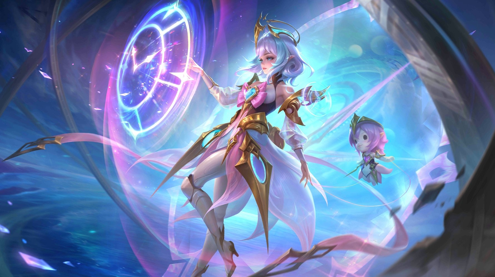

Angela: "Bunnylove"
Summary
Zilong is one of the first heroes in MLBB. He is a Fighter/Assassin, and could easily chase down enemies and delete them. He is rather infamous as an extremely easy to play hero and also being extremely weak in higher ranks.
Roles

The Assassin role consists of heroes that could easily kill enemies with low health. Great as Junglers.

The Fighter role consists of heroes that could sustain in teamfights for a long time. Great as EXP-Laners.
Playstyle
Zilong is extremely weak early-game, as he needs items in order to do any damage. Therefore, try to farm as much gold as possible, and in late-game, you could easily shred through groups of enemies.